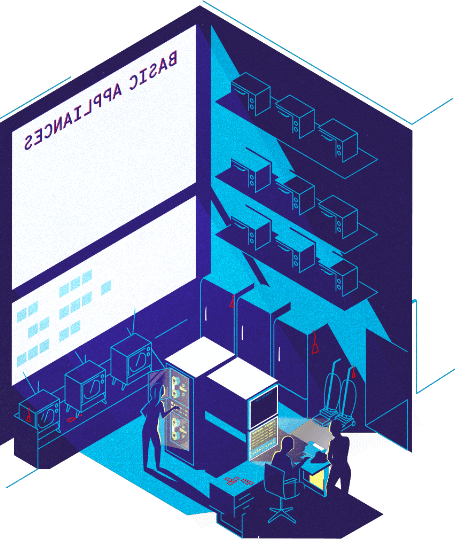
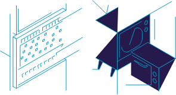

Subscribe to the podcast to receive new episodes as soon as we release them

The computing industry started booming after World War II. General Electric’s CEO refused to enter that market. But a small team of rebel employees bent the rules to forge on in secret. They created the GE 225. It was a giant leap in engineering that pushed computing from a niche market to the mainstream—sowing the seeds for today’s tech industry.
Before the creation of general-purpose mainframes, computers were often built to perform a single function. William Ocasio recalls how GE’s first specialized computers, the ERMA, helped banks process thousands of transactions per day. John Joseph recounts how a few key GE employees hoodwinked their CEO into creating a computing department. Tomas Kellner explains how their work resulted in a revolutionary machine: the GE 225. And Joy Lisi Rankin describes how engineers at Dartmouth College adapted the GE 225 for time-sharing and used it to create BASIC—major milestones in making computing more accessible.
00:05 - Saron Yitbarek
Let's wind the clock back a few decades. Back to the late ‘40s, early ‘50s. There was only one serious name in the computer game: IBM. It's nickname was Snow White. The other much smaller tech companies where the Seven Dwarves. One of those dwarves was General Electric, a company that sometimes built special-order machines, but never produced computers for the open market.
00:32 - Saron Yitbarek
General purpose computers were IBM's territory, and IBM was GE's second largest customer next to the US government. They were regular buyers of GE's vacuum tubes, motors, transformers and switches, and the president of GE, Ralph Cordiner, wanted to keep it that way. Yet every once in a while, a GE department head would write up a business plan that veered in the direction of the computer business, and when those plans wound their way up to the president's office for final sign off, they would be promptly rejected with a big fat no, and the initials RJC scribbled on the top page—in orange crayon, no less.
01:19 - Saron Yitbarek
In fact, throughout Cordiner's 13-year reign as president and CEO, GE never swayed from that position. Even as research pointed to computers as the fastest growing segment of the electronics industry, employees with projects that crossed the line faced Cordiner's wrath. And yet, a small group of rebel employees saw an opportunity to build a mainframe computer, and they couldn't let the idea go. Little did they know that this computer would save the banking industry, open the door to timesharing, and give birth to a whole new programming language. Last season, we heard how John Kemeny and Thomas Kurtz created BASIC at Dartmouth College, and we learned that BASIC is an interpreted language, which means it was too resource heavy for early computers. It's an example of a great idea that had to wait for the right hardware moment. The GE 225 was that hardware. In this episode, we uncover a little known story of a mainframe-that-almost-wasn't yet this room-sized computer would be a gateway machine, inspiring visionary command line heroes like Steve Wozniak and Bill Gates to launch the personal computing revolution. Its creation is still meaningful today. I'm Saron Yitbarek, and this is Command Line Heroes, an original podcast from Red Hat. Season Four: Hardware.
03:05 - Speaker 1
Mr. Adams finds his new checking account very useful. Instead of collecting the money direct from the Elmvale National Bank, the company does it through its own bank. Like many other banks, it sends its checks to the Federal Reserve Bank for collection. The Federal Reserve Bank is set up to handle thousands of checks from hundreds of banks in a single day.
03:29 - Saron Yitbarek
In 1947, a check winds its way through a bank to get deposited, and legions of bank workers are clocking in countless hours to deal with all those checks. The post-war economy was booming, but that meant banks were now drowning in paperwork. They were forced to close at 2 PM just to leave time for filling out ledgers by hand, and they were still falling behind. A fast, powerful machine was urgently needed to keep up with the pace of business. Over at Bank of America, they had millions of checks to handle each day. Here's William Ocasio, professor at the Kellogg School of Management at Northwestern University.
04:12 - Will Ocasio
Can you imagine a world of banking without computers? This is a heavy, paperwork-intensive industry, and particularly the case of Bank of America with all these multiple branches. So there's all this information that they want quickly and to be able to communicate and also to process it. So that was really important for such a large company. I think they understood that computers was the way of the future.
04:39 - Saron Yitbarek
So in 1950, B of A contracted Stanford Research Institute (SRI) to figure out how to automate the handling of all those checks. It took SRI 5 years to build a prototype, which they called the electronic recording machine accounting, or ERMA. The machine had over a million feet of wiring, 8,000 vacuum tubes, and weighed about 25 tons. It had the potential to handle 50,000 transactions a day.
05:11 - Saron Yitbarek
Bank of America was keen to start producing the ERMA right away. So they sent out a request for proposal (RFP) to electronics manufacturers to bid on the job. Of course, everyone figured the winner would be the juggernaut of business machines: Ms. Snow White herself, IBM. Doc Baker was the VP of the Electronics Division over at GE, and he knew his boss, Cordiner, didn't want to move into IBM's territory. He knew computers were out of bounds, but when he got wind of Bank of America's RFP, well, Baker saw an opening he didn't want to miss. He approached Barney Oldfield, the manager of GE's microwave laboratory in Palo Alto, which was the nearest facility to SRI, and he made Oldfield a proposition. Here's John Joseph, an Associate Professor of Strategy at the University of California, Irvine.
06:09 - John Joseph
You know I think here was somebody who was a very successful, aggressive entrepreneur type at GE, and was a savvy manager and businessman, and he saw this as a huge opportunity to grow the division.
06:27 - Saron Yitbarek
Baker, along with Oldfield, was able to convince their boss, Cordiner, that this would be a special purpose process control system, not a general purpose computer, not something that would upset IBM. GE was certainly not going into the computer business.
06:45 - John Joseph
The reason I think Cordiner eventually capitulated was that he put a condition on them going after it, and said, just this contract. We don't want to enter the business machine market more generally. We want to enter specifically this particular bid and you can go after it. And so, he said, go.
07:08 - Saron Yitbarek
Cordiner let them go ahead with the RFP, feeling confident that they wouldn't win the contract anyway. Let them blow off some creative steam, and then Oldfield hand delivered their proposal to the bank's San Francisco office, and waited.
07:26 - Saron Yitbarek
Then much to everyone's surprise, IBM pulled out of the race and, even more unexpectedly, GE's proposal rose to the top. Bank of America awarded them the contract. Not any of the other technology manufacturers—the underdogs got it. The underdogs at GE won the multimillion dollar contract. On April 9, 1956, B of A's board of directors accepted GE's proposal. Baker signed a $31 million contract without running it by his boss, Cordiner. This impossible project was becoming real. All Oldfield needed now was a place to build the ERMAs. And, oh yeah, an actual computer department.
08:19 - John Joseph
Okay, so now they had to start putting it together. First of all, they actually established a computer department. Now, that seems like an obvious statement, but to create a new department at a big company like this, he was able to bring together the resources and the people to actually create a department within General Electrics. That was a big deal in and of itself.
08:46 - Saron Yitbarek
Barney Oldfield became general manager of GE's new computer department. He set up the department to look like another GE department, the Military Systems Division, where they built special purpose computers. The 2 divisions could then be in competition with each other, and not in competition with IBM.
09:06 - Saron Yitbarek
This was how the new computer department was meant to fly—under corporate's radar. In a way, GE's decentralized management style was kind of perfect for a stealthy operation like this. As long as departments were profitable, there really wasn't much oversight. No one would know what was going on.
09:26 - John Joseph
Part of the backdrop here was that, in order to grow your little fiefdom in GE at the time, meant that you had to go out and look for opportunities for growth. There wasn't any corporate planning at the time. He was a go-getter, and saw this as a great opportunity. And I think he had the sheer will to bring the organization along because this was a huge, huge step.
09:59 - Saron Yitbarek
The bigger challenge lay in where to locate the manufacturing facility. Up to this point, the Palo Alto group assumed they would move into a Stanford industrial park, but California had tough labor laws and high taxes. So it was off the table. GE decided on Phoenix instead. Maybe not the best place to attract experienced computer engineers, sure, but Phoenix had a major upside.
10:26 - John Joseph
Now, the advantage to putting them in Phoenix was that it put them far away from GE. GE was headquartered in New York City at the time, so it was a case where I think it allowed them to happily operate under the radar of top management for a while to get up and running, because you know a lot of money was at stake. So it allowed them to do the skunkworks away from Cordiner.
10:55 - Saron Yitbarek
Oldfield managed to put together a solid team of engineers out there in Phoenix. Bob Johnson, George Snively, Gene Evans, George Jacobi, among others. John Pivoden was in charge of the hardware. Henry Harold was the logic designer. And Jay Levinthal was the system architect. Holed up in what seemed to them like the middle of nowhere, the team got along surprisingly well. They were up to the task to build the ERMA under a shroud of secrecy, and it didn't hurt that they had a sense of humor about the whole thing. We found an old skit that the team performed, something they called Frontiers of Progress, and I think it shows you where they were at. Here's an excerpt.
11:39 - Speaker 2
Well, here we are in Phoenix.
11:41 - Speaker 3
Well, I see you finally made it. Welcome to the computer department.
11:45 - Group
The what department?
11:46 - Speaker 3
The computer department.
11:47 - Speaker 4
What's a computer?
11:49 - Speaker 3
Oh, it's sort of a turbine with Christmas tree lights that plays music.
11:53 - Speaker 5
They're a kind of fast adding machine.
11:56 - Speaker 2
We won't have to use one in accounting, will we?
11:58 - Speaker 3
No, but we will have to give Van one to play with and pretend we're using it.
12:01 - Speaker 4
Uh, what's a computer?
12:08 - Saron Yitbarek
As far as Bank of America was concerned, a computer was something that could handle 55,000 transactions a day. It also needed to sort and distribute checks of all sizes and conditions. It needed to update customer accounts and balance operations. It needed a way to identify the checks, and Bank of America wanted not one, but 36, of these machines.
12:34 - Saron Yitbarek
Early in the process, the team decided that the GE version of ERMA would be transistorized. In the '50s, transistors were more expensive than vacuum tubes, but they required less space and simpler connectors to the logic boards. So, each vacuum tube and flip flop would be replaced by two transistors, with some additional resistors and capacitors to hold it all together. The other big change to the original prototype was to make the ERMA a stored program computer rather than a hardwired machine. This would allow for a simpler machine design and easier modifications later on. Since most of GEs developers were on the hardware side, they needed to hire themselves a programmer. They chose a man who not-too-many years before had escaped Nazi Germany and had come to the U.S. as a refugee. His name was Joseph Weizenbaum.
13:34 - Saron Yitbarek
Weizenbaum had programmed a G-15 computer at a company called Bendix. He even developed a pseudo machine programming language for it called Intercom 100. With no experience in banking other than cashing his own checks, Weizenbaum would now lead the micro programming team to write software capable of supporting the transistorized hardware. The team also programmed all the peripheral devices including the checks orders, and something they called the MICR reader. That stands for magnetic ink character recognition. You know that line of numbers on the bottom of your checks? That's MICR. Three sets of numbers that identify a bank account, a routing number and a check number, and it's still there on all your checks because of the work Weizenbaum and his team did out in Phoenix.
14:28 - Saron Yitbarek
Cool side note. Weizenbaum would later go on to be considered one of the founding fathers of AI (artificial intelligence). On December 28, 1958, almost 3 years after GE won the contract, the San Jose Branch of Bank of America installed the first completed ERMA machine. The system could only handle 100 transactions a day, but it was a step in the right direction. The next step, get it to process the required 55,000 transactions a day.
15:04 - Saron Yitbarek
By March, the team had not only finished tweaking the machine to get to 55,000, they added additional sorters and printers so that the overall system could handle 2 million transactions a day. Bank of America was thrilled. The Phoenix computer department delivered 32 machines, now christened the GE-100, with more orders in the pipeline. It was time to celebrate.
15:32 - Will Ocasio
Bank of America invited Cordiner to the unveiling of the computer. They even invited Ronald Reagan who used to work for General Electric as their TV spokesperson, so this was going to be a big deal. Then Cordiner came in to the unveiling and he thought, "Wait a minute, this is not what I approved." So that's where he got mad, and he ended up firing Barney Oldfield because of that.
16:00 - Saron Yitbarek
Ugh, fired. The Phoenix team had exceeded expectations, had really done something extraordinary, but now their leader was rewarded by being let go. Not only that, but Cordiner also reassigned the head of the division, Doc Baker. His replacement, Harold Strickland, didn't care for computers. Cordiner still apparently worried about upsetting IBM, gave Strickland firm instructions to keep the computer group in check. And the person who replaced Oldfield, a company man by the name of Claire Lasher. Little did Cordiner know, the rebel streak ran strong in Lasher, too.
16:47 - Saron Yitbarek
GE President Cordiner wanted to get out of the business computer industry, which he never wanted to be in in the first place. He wanted to get GE back to the old ways as soon as possible. He allowed for the fulfillment of existing orders, but in his words, "No more." But you know, when Cordiner's banking friends started flooding him with compliments about the innovative GE-100, he changed his tune. So okay, they could keep playing in the sandbox they'd created, the only restriction, "Do not go head-to-head with IBM."
17:24 - Saron Yitbarek
Claire Lasher's expertise was in marketing. He saw the huge sales potential of general purpose computers and took a page out of Oldfield's book. He developed his own plan. A line of computers, the 200 series, with a dual purpose. They would be specific process control machines and a general purpose system. Claire called his business plan, The Big Look. He recruited more engineers to the Phoenix team, including someone who had worked on the GE-312 and 412 process control computers back in New York. His name was Arnold Spielberg, and he would lead the team.
18:05 - Saron Yitbarek
After looking over the technical specs, Arnold said something like, "Hey, if we move a few things around on this piece of hardware, we could have a highly competitive general purpose machine." Arnold added peripheral devices like card readers, printers, and magnetic tape handlers. The production prototype was completed in just 5 months. The new general purpose machine was called the GE-225. Fun fact, Arnold Spielberg is Steven Spielberg's dad. I spoke to Tomas Kellner, GE's chief storyteller, to learn more about Mr. Spielberg and his role in creating the machine that the brass never wanted, the GE-225.
18:51 - Tomas Kelner
Well, Arnold and his colleague Chuck Prosper were actually the designers of the computer, they built it together. It was interesting because unlike the previous GE computers, the GE-225 was a business computer, and it actually had a storage system, so it was able to handle the input and output of data.
19:15 - Saron Yitbarek
What technological advancements in the GE-225 can be attributed to Arnold?
19:21 - Tomas Kelner
One thing that was really interesting was that this computer actually had its own memory, and that was able to record and output information. The memory could store between 8,000 to 16,000 20-bit words, and then it also had an auxiliary memory that had about 32,000 20-bit words. Some of the computers that he also worked on were wire software, so they were really hard to use. They basically had to be programmed once, and that was all you could do. This was different because of the computer's ability to store data.
19:58 - Saron Yitbarek
What did the GE-225 look like?
20:02 - Tomas Kelner
The GE-225 didn't look like much, to be honest with you. It looked like a bunch of boxes. It had magnetic tapes that stored the information. There was an input terminal, an output terminal, and even though it was called a small computer, it filled an entire basement room.
20:26 - Saron Yitbarek
What tasks could it perform that no other computer could at the time?
20:30 - Tomas Kelner
One of the new features of the GE-225 computers was the ability to do time-sharing. You were able to access the computer from multiple terminals, multiple remote terminals, giving users the ability to work on the computer at the same time, to write code at the same time. As far as I know, this feature was not available in other commercial computers at the time.
20:58 - Saron Yitbarek
So who bought the GE-225? Who were the clients?
21:02 - Tomas Kelner
GE definitely used the computers internally, but a number of banks across the country used them, as well as the Cleveland Browns apparently used them to manage season ticket sales. Somebody even used one of the computers to predict a statewide election, and apparently the prediction matched the results. So it seemed like people were quite smitten with the machine. Cordiner told the team to get out of the computer business within 18 months, and it took them longer—much longer than that because of the success of this computer.
21:43 - Saron Yitbarek
I want to pause here for a sec to emphasize, the GE-225 was so much more than just a banking solution. Remember John Kemeny and Thomas Kurtz, the creators of BASIC? Their programming language was created on the GE-225. And there's another command line hero who caught the programming bug on the GE-225.
22:03 - Saron Yitbarek
Though he was still in high school at the time. Well, I'll let Tomas tell you. How was the GE-225 instrumental in the development of BASIC?
22:14 - Tomas Kelner
One of the interesting applications of the GE-225 was the use of the computer by Dartmouth and their computer scientists to develop the BASIC language. They wanted to come up with a tool that would allow computer programmers to work from different terminals at the same time. And that tool was essentially, would later became BASIC. Now an interesting aside about BASIC is that GE promptly licensed BASIC from Dartmouth and started using it internally and started offering it with their computers, which is how it got to Steve Wozniak. He was exposed to a terminal that was connected to the GE-225 computer running BASIC, and he was so smitten with it that he actually started writing his first software on that terminal.
23:13 - Saron Yitbarek
So when you spoke to Arnold, was he aware of the impact he'd made on the computing world?
23:18 - Tomas Kelner
The interview with Arnold Spielberg was truly incredible. When I talked to him, he was 99.
23:23 - Saron Yitbarek
Wow.
23:24 - John Joseph
He remembered everything. We talked about the internet. He definitely said that back then in the 1960s, he was thinking a lot about computer applications, but it didn't occur to him that one day all of us would be connected—in our homes and in our pockets—to this vast network that allows us to pull information on a whim and that allows airlines to control planes in the sky and corporations control machines. On one hand, he was always very interested in the development of the field. At the same time, he was also very humble in admitting that the field has evolved in a way that he could not have predicted in the 1960s.
24:12 - Saron Yitbarek
Steven Spielberg. I'm wondering what kind of influence do you think this had on him and his career?
24:18 - Tomas Kelner
He remembers visiting his dad's workplace, the GE factory in Phoenix, Arizona, where they lived. His dad brought him over and he had no clue what was happening. And that his dad was trying to explain to him what computers were, and what they did. And he said a quote was, "It was all like Greek to me." So he really had no idea. I asked Arnold, so what was your impression? And he said, "Yes, well, I wanted him to study engineering. I wanted him to be interested in tech, but he was always interested in movies."
25:00 - Speaker 6
This then is the electronic age in banking. Today, this magnetic ink computer system makes possible the world's fastest, most efficient banking service. Similar systems eventually will be employed by insurance companies, department stores and utilities. In fact, wherever paperwork is a problem. But who knows, perhaps sometime in the future, an even better method of handling paperwork may be found. Of this, you can be sure.
25:34 - Saron Yitbarek
By 1962, the GE-225 was in full production. After its launch a year later, it quickly became a blockbuster product for the company. Not only was it profitable, it also earned a great reputation in the business world. In the months afterward, Cordiner received congratulatory messages from all over the country, so much so that he finally, finally changed his mind about going into the computer business. He formally recognized the General Electric computer department at last.
26:13 - Saron Yitbarek
Let's go back to something that Tomas brought up in our conversation, and something we also talked about in last season's C change episode. When Dartmouth College used the GE-225 to develop a tool that allowed programmers to work from different terminals at the same time—in other words, timesharing—GE hadn't realized the potential for that.
26:38 - Joy Lisi Rankin
Dartmouth built its timesharing system using the GE-225 as well as a GE DATANET 30 and General Electric had previously considered neither of those machines for timesharing.
26:53 - Saron Yitbarek
Joy Lisi Rankin is a technology historian.
26:57 - Joy Lisi Rankin
The key thing about timesharing was that the computer needed some way of being able to sort of stop its own clock. That's what the timesharing refers to, not people sharing time on the computer, but the computer actually sharing its own time to process multiple computing requests, and it was the faculty and students at Dartmouth College who had the idea of using the DATANET 30, which was a GE communications computer to do that clock and time management together with the 225.
27:32 - Saron Yitbarek
Because mainframes were so expensive in the '60s, the most efficient way to use them was to run programs in batches. Someone would write a program, get the cards punched to run the program, then hand over the cards to an operator. Then they'd have to wait for it to be batched with other programs. Sometimes they'd wait for hours, even days.
27:58 - Joy Lisi Rankin
Timesharing, BASIC, and Dartmouth and GEs relationship are crucial to ushering in what I call an era of personal computing before social computers and social networking, well before Facebook. GE was easily able to take what was learned from Dartmouth building this timesharing system and adapt it to their own business and quickly build a global timesharing service industry. I think at one point in 1970 they had 100,000 timesharing users in Europe alone. So this was a substantial business for them through the 1970s into the 1980s.
28:44 - Saron Yitbarek
Despite the success of the GE-225 and the line of two hundreds that followed, General Electric sold its mainframe division to Honeywell in 1970. But they did decide to keep their timesharing business open, and it stayed profitable for years to come.
29:08 - Saron Yitbarek
So Ralph Cordiner got there eventually, but just like we saw in our last episode with the creation of the mini computer over at Data General, it often takes a team of stubborn, wide-eyed rebels and some forward-thinking execs to build the next great machine. Because, sometimes the powers that be have trouble envisioning the power that could be. Opening up the decision-making process to others can lead to surprising and amazing results.
29:41 - Saron Yitbarek
In our next episode, we're picking up from where the GE-225 left off to talk about how that mainframe inspired a whole new generation of programmers to kickstart the personal computing revolution and how that generation inspired us today. Command Line Heroes is an original podcast from Red Hat. Head on over to redhat.com/commandlineheroes for some great research on the team behind the GE-225. I'm Saron Yitbarek. Until next time, keep on coding.
Further reading
The Rise and Fall of the General Electric Corporation Computer Department (PDF) by J.A.N. LEE
1960 General Electric Computer - GE 210 - 1961 MICR - Banking Finance Data Processing by General Electric
Bank computing turns 40 by Rodney Gedda
How Steve Wozniak Wrote BASIC for the Original Apple From Scratch by Steve Wozniak
Brochure for the GE-200 computers (PDF) by General Electric
Bonus episode
In the 1960s, Dartmouth saw the GE 225 as a massive opportunity for its students. Hear how a few faculty members and students made the mainframe widely accessible.
Featured in this episode
Get the newsletter
After each episode drops, we'll send you commentary from the Command Line Heroes team, as well as links that help you take a closer look at the topics we cover. It's as simple as that.
Presented by Red Hat
For 25 years, Red Hat has been bringing open source technologies to the enterprise. From the operating system to containers, we believe in building better technology together–and celebrating the unsung heroes who are remaking our world from the command line up.